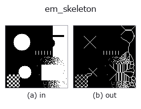

region op• Datenarten: region → region
• Aufruf: fullseye.apply(img, "em_skeleton", a=0.5, b=0.5) (das 2-D-Modell ist ein Bild plus zwei skalare Regler a,b∈[0,1])

*Die Abbildung ist die tatsächliche Ausgabe auf einer synthetischen 128×128-Eingabe. Links Eingabe, rechts Ausgabe. Punktwolken als Draufsicht-Streudiagramm (Helligkeit = z), 1-D-Reihen als Linie, Volumen als Maximum-Projektion entlang z, Videos als mittleres Bild, komplexe Bilder als Betrag; Rückgabewerte, die kein Bild ergeben, werden als Werte gezeigt.*
*Regler a ändert die Ausgabe nicht (gemessen: identisch bei 0,1 / 0,5 / 0,9).*
*Regler b ändert die Ausgabe nicht (gemessen: identisch bei 0,1 / 0,5 / 0,9).*
Stufen (die vorangehenden Ops → dieser Op, von links nach rechts):
▸ em_skeleton: Stufen (Doku-Website)
Auf anderen Bildern (synthetische Szene / Foto / Münzen. Obere Reihe: Eingaben, untere Reihe: deren Ausgaben. Regler auf Standard):
▸ em_skeleton: andere Eingaben (Doku-Website)
Invariante Ausdünnung nach Eckhardt–Maderlechner (dieselbe Familie wie HALCON skeleton).
Quelle: U. Eckhardt, G. Maderlechner, "Invariant Thinning", Int. J. Pattern Recognition and AI 7:1115-1144 (1993). Die Implementierungsregeln folgen M. Couprie "Note on fifteen 2D parallel thinning algorithms": eine Clean-Room-Implementierung der EM93- Definition. Abgeglichen mit den in dieser Note veröffentlichten EM93-Referenzausgaben: Bei Form 1 stimmt die Pixelmenge des Skeletts bitgenau überein (724/724), bei den Formen 2/3 stimmen die Pixelzahlen mit den veröffentlichten Werten überein (2434 / 3895). tests/test_regions2.py::test_em_skeleton_matches_published_em93_reference. (Ein direkter Abgleich mit einer echten HALCON-Installation wurde nicht durchgeführt, aber es stimmt mit der Referenzausgabe desselben veröffentlichten Algorithmus überein, auf den HALCON sich stützt):
interior = Pixel, dessen 4-Nachbarn alle Vordergrund sind
simple = (8,4)-einfacher Punkt (1 Vordergrund-8-Zusammenhangskomponente ∧ 1 angrenzende Hintergrund-4-Zusammenhangskomponente)
perfect = der Nachbar in einer der 4 Richtungen ist interior, und die Gegenrichtung ist Hintergrund
"alle Pixel, die simple und perfect sind, gleichzeitig löschen" bis zum Fixpunkt wiederholen
Hinweis: Wird die Transkription der Note wörtlich implementiert, "simple nur mit starken (4) Zusammenhangskomponenten zählen", entfernt das parallele Löschen diagonale Brücken gleichzeitig und zerstört die Topologie (an einem Gegenbeispiel gemessen). Diese Implementierung, die simple als standardmäßigen (8,4)-einfachen Punkt auffasst, stimmte bitgenau mit der Referenzausgabe überein, was belegt, dass dies die korrekte Lesart von EM93 ist.
Vollständig parallel, symmetrisch (kommutiert mit 90-Grad-Drehung/Spiegelung), topologieerhaltend und idempotent. Behält mehr Äste als das Zhang–Suen-artige sk_skeleton (gemessen 1.4-1.5-fache Pixelzahl = im Einklang mit dem Charakter von EM in Coupries Vergleichstabelle: symmetrisch, viele Äste). Sporne mit pruning nachzubearbeiten ist ebenfalls dieselbe Praxis wie bei HALCON. Die Regler a, b werden nicht verwendet.
Randbehandlung: alles außerhalb des Bildes als Hintergrund (0) behandeln (gemessen; tools/impl2/border_probe.py).
• Leitfaden zur Familie gallery2d_region
• Katalog der Beispieldaten (Download-URLs / Lizenzen) — 2-D nutzt skimage.data (BSD/Public Domain) plus synthetische Bilder, 3-D nennt Download-URLs echter Datenquellen (Stanford, PDS, …).
• Herkunft und Literatur der Operatoren — die Quellen der Forschung/Verfahren, auf denen diese Operatorfamilie beruht.
• Der kanonische Algorithmus (Autor, Jahr) und seine Anwendungen stehen im Familienleitfaden oben.
Das Programm unten ist nachweislich lauffähig (gleiche Eingabe wie die Abbildung). In der Studio-Hilfe wird dieser Block zu Schaltflächen, die es sofort laden und ausführen.
threshold 0.50 0.50 em_skeleton 0.50 0.50
▸ Diese Pipeline laden · Laden & ausführen
• gallery2d_region — py -3.11 examples/gallery2d_region.py
region als Eingabe)identity · reg_erode · reg_dilate · reg_open · reg_close · fill_holes · select_largest · remove_small
region)reg_erode · reg_dilate · reg_open · reg_close · fill_holes · select_largest · remove_small · invert_region
*Provenance: ops.py — 2D Operator-Registry. Diese Notiz wird von tools/opdocs.py md erzeugt (nicht von Hand bearbeiten).*
© 2026 Kazufumi Furuse — Fullseye operator documentation. Licensed under Apache-2.0.